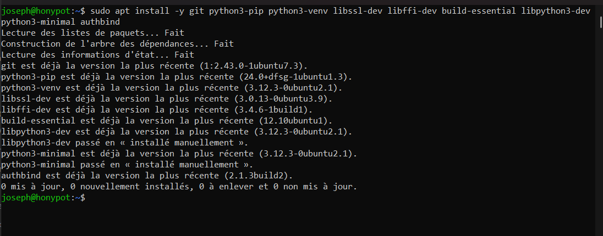
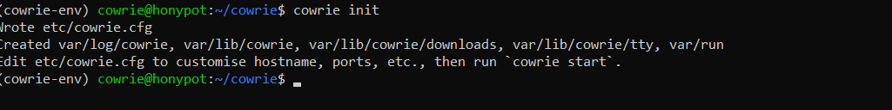

Isoler l’environnement
Trois machines, un plan d’adressage maîtrisé et une séparation claire entre le honeypot, la supervision Wazuh et la machine de test.
Portfolio cybersécurité · Lomé, Togo
NAKORE Yendoubouame Joseph
Cybersécurité offensive & défensive — Pentest, SOC et sécurité des systèmes
Je conçois et documente des labs, writeups et projets de détection afin de développer des compétences opérationnelles en analyse d’attaques, sécurité réseau et réponse aux incidents.
Une étude de cas réelle issue du portfolio : architecture, installation, collecte de journaux et validation des événements dans un environnement honeypot contrôlé.




Trois machines, un plan d’adressage maîtrisé et une séparation claire entre le honeypot, la supervision Wazuh et la machine de test.
Mise à jour du serveur Linux, installation des dépendances et création d’un compte dédié pour réduire les risques d’exécution.
Clonage du projet, création de l’environnement virtuel Python et installation reproductible des composants du honeypot.
Configuration des services simulés, collecte des interactions et transformation des journaux en éléments exploitables pour l’analyse.
Archive vivante
Le portfolio est alimenté par les projets et notes publiés depuis Obsidian. Chaque rubrique donne accès aux preuves, pas seulement à une liste de compétences déclarées.
Disponible pour échanger